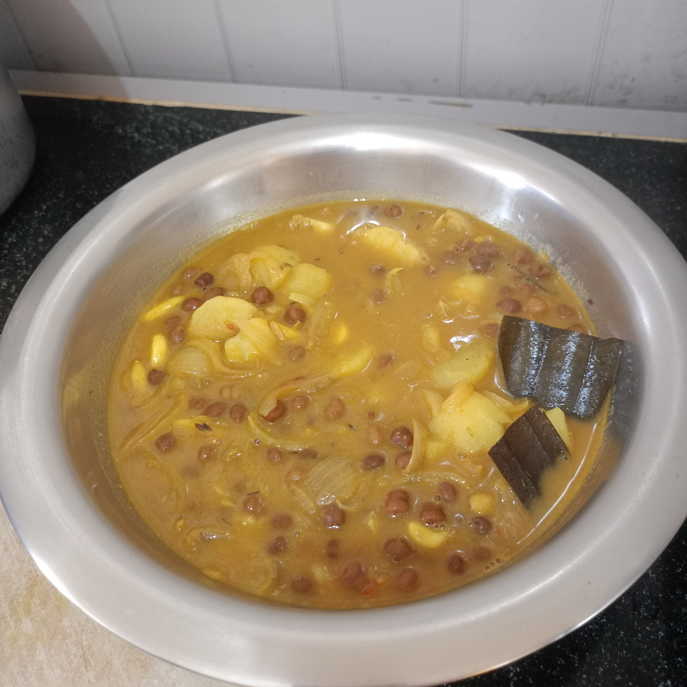
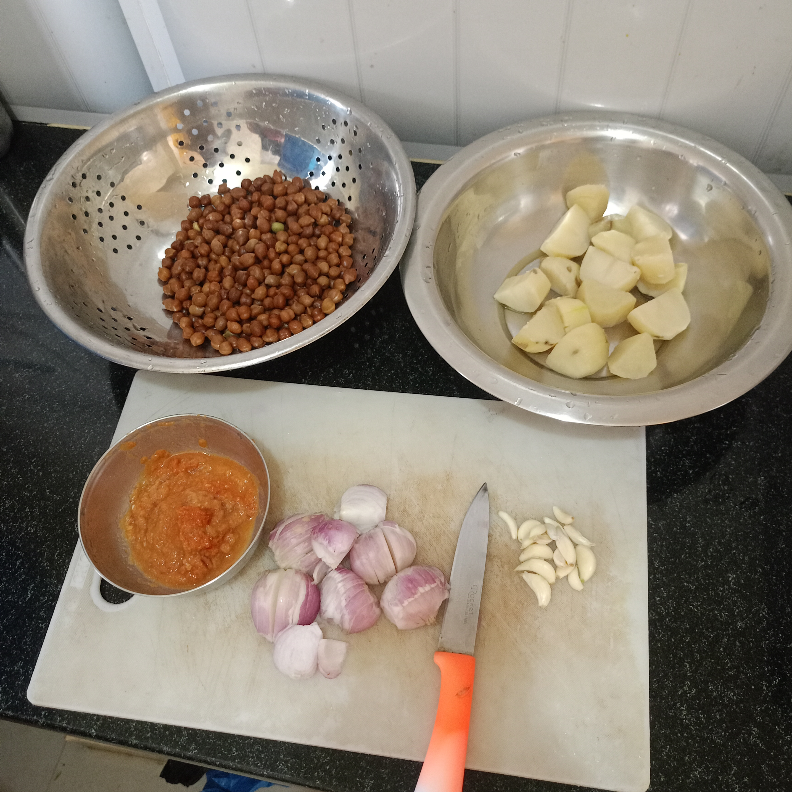
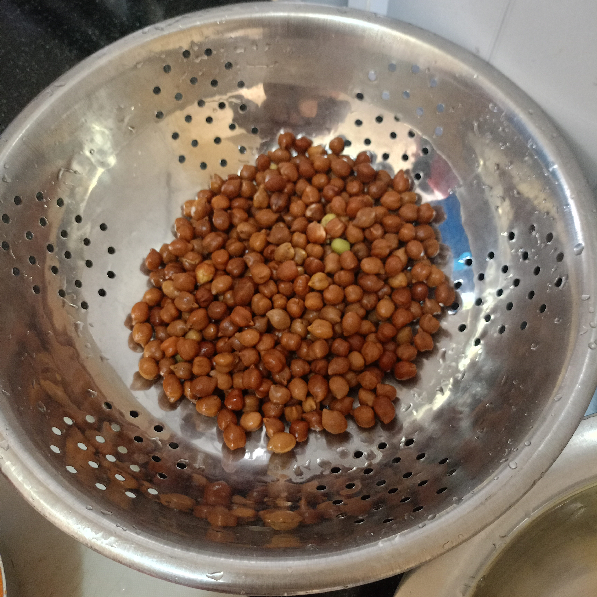

SPICELO STORY
Kala Chana Aloo Curry
Learn how to make homemade Kala Chana Aloo Curry with black chickpeas, potatoes, onions and aromatic Indian spices. This comforting curry serves two people and can be enjoyed with rice, roti or muri.

The Story Behind This Dish
One day, my wife asked me if I could make Chana Aloo Curry. I had eaten it before, but I had never cooked it myself.
She suggested that we make it together. I helped her while she prepared the curry, and I learned more about how this dish comes together.
While tasting it, I said that it would also go well with roti. She told me it could be eaten with roti, rice or muri. That day, we enjoyed our Kala Chana Aloo Curry with rice.
1 hour
Easy
Ingredients for Kala Chana Aloo Curry
For 2 persons
- 200 g kala chana (black chickpeas), soaked overnight
- 2 medium potatoes
- 2 medium onions, finely chopped
- 1 spoon ginger paste
- 1 spoon garlic paste
- ½ spoon turmeric powder
- 1 spoon cumin
- 1 spoon green chilli paste
- Salt to taste
- 2 glasses water
- 1 spoon garam masala
- 2 spoons mustard oil


How to Make Kala Chana Aloo Curry
- Soak the kala chana overnight.
- Boil the soaked kala chana and potatoes together in the same pot for about 20 minutes, or until cooked as desired.
- Heat 2 spoons of mustard oil in a kadai.
- Add the finely chopped onions and fry until lightly golden.
- Add the ginger paste, garlic paste, turmeric, cumin, green chilli paste and salt. Fry the masala well.
- Add the boiled potatoes first, followed by the boiled kala chana. Fry briefly.
- Add 2 glasses of water and cook the curry until it reaches the consistency you like.
- Add garam masala at the end and finish cooking.
Total time: approximately 1 hour.
🎬 Kala Chana Aloo Curry Video
Tips for Making Kala Chana Aloo Curry
- Soak the kala chana overnight before cooking.
- Check that both the kala chana and potatoes are cooked to your preferred softness.
- Fry the onions until lightly golden for a richer masala base.
- Adjust the water to make the curry thicker or thinner to your liking.
- Add garam masala at the end.
- Serve with rice, roti or muri.
Kala Chana Aloo Curry FAQ
How many people does this recipe serve?
This recipe is designed to serve approximately 2 people.
What is kala chana?
Kala chana is black or brown chickpeas, used here with potatoes to make a curry.
What can I serve with Kala Chana Aloo Curry?
You can enjoy it with rice, roti or muri.
How long does this recipe take?
The total time is approximately 1 hour. Kala chana should be soaked overnight before cooking.
My Food Note
I had eaten Chana Aloo Curry before, but making it together with my wife was a new experience. We enjoyed it with rice that day, and I learned it can also be served with roti or muri.
💬 Comments